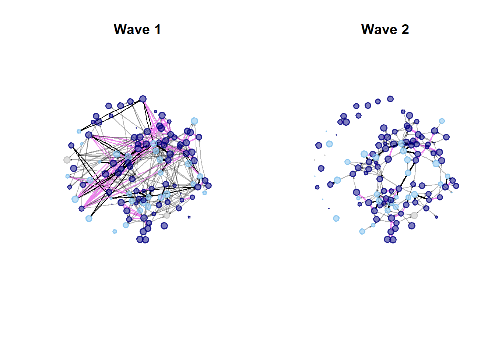

Final Project - Descriptive Results
by: Nina Sneijers
1 Descriptive Results
1.1 Population characteristics
From the population of 121 students, 75% of the students had at least one parents that had enjoyed higher education. 65.3% of the student population was female and 34.7% of the students was male. No one said they identified as non-binary. The biggest ethnic groups were Asian (41.3%), white (29.7%), black (12.4%) and Hispanic (10.7%). Furthermore, 5% was multiracial and one student was Hawaiian.
Average social satisfaction in the first wave was a 5.6 and for the second wave it was a 5.7.
1.2 Network characteristics
The network has 395 ties in wave 1 and 270 ties in wave 2, which indicates that students hang out less with other students from their community later in the year than they did in the beginning of the year. The network is also less dense in wave 2 (0.018) than in wave 1 (0.027), which confirms that there are fewer overall ties within the community. Generally, the density of both waves can be considered very low, which is interesting. Perhaps this is due to the fact that this is only one community and there is a possibility that students also connect with people from outside of their own community. Those ties cannot be taken into account.
In terms of reciprocity, this seems to remain relatively stable across the waves, although it was slightly higher in wave 1 (0.47) than it was in wave 2 (0.44). This can also be seen back in the number of mutual dyads, which was 93 in wave 1 and 60 in wave 2, indicating that some of the reciprocated dyads of wave 1 have been broken in wave 2. In terms of the number of isolates in the network, meaning people who have not send out ties, nor received any ties, this also remains relatively stable, with 15 isolates in wave 1 and 17 in wave 2. For all these three statistics, it should be taken into account that if students were not present in one of the waves, their incoming ties were also put to 0. Therefore, some of these statistics might be slightly biased.
Lastly, I have looked into whether segregation on parental education level overall seems to occur. Coleman’s homophily index describes the extent to which similar people are more likely to be connected (Tolsma and Hofstra 2022). When looking at the results of wave 1, there can be seen that for both groups, the value is close to 0, (0.01 for the no higher-educated parents group and -0.01 for the higher-educated parent(s) group). For wave 2, the values are still very low, but for students with at least one higher-educated parent there is a bit more likelihood to connect with other students that have higher-educated parents (0.13), whereas for the no higher-educated parents group, there is a bit more of a likelihood that they send out ties to students who have at least one higher educated parent (-0.12), thus to students who are dissimilar to them.
To look a bit further into the homophily, I have also calculated Moran’s I for both waves. This statistic look at whether nodes who are closer to one another in the network are more alike (Tolsma and Hofstra 2022). To calculate Moran’s I, I have made use of the ape package in R. This package row-standardises by default, but because parental education level is a fixed characteristic, the amount of neighbours does not influence it. For Wave 1, Moran’s I yielded no significant results, (Moran’s I = -0.01, SD = .07, p = .93), confirming what Coleman’s homophily index has also shown, namely that there is no clear segregation based on parental education level. Wave 2 also did not yield a significant result (Moran’s I = 0.05, SD = .08, p = .48).
Based on this there can be concluded that hypothesis 1 is rejected.
1.3 Network visualisation
Figure 1 Evolution of the hanging out ties of
students of the Michigan Learning Community 
Figure 1 depicts the network evolution of the Michigan Learning Community from the beginning to the year towards the middle of the year. What was already concluded from the descriptives can also be seen back in the Figure, namely, that the network is not very dense, especially not in the second wave. Additionally, what can be seen is that the first wave entails a lot more ties between students than the second wave. However, there has to be noted that a couple of the nodes that sent out many ties in the first wave, seem to not have been participating in the survey in the second wave, because there nodes have become very small and there are no in- or out-degree ties present towards their nodes. This might influence what the network looks like.
Moreover, although Moran’s I and Coleman’s homophily index do not indicate that segregation has been taking place, when looking at the reciprocated ties, in the first wave homophily does seem to occur among reciprocated ties, as the violet ties are more present than the black ties. This indicates that while someone’s parental education might not matter for sending out a tie, it potentially does matter for receiving this tie back or not.
When looking at how the nodes are divided, three somewhat bigger friendgroups (a friendgroup being a group where multiple reciprocated ties occur) can be identified. One of these groups can be seen on the left side and seems to be quite homogeneous, mainly consisting of students whose parents have enjoyed higher education, as there a quite some violet ties occurring there. Also on the right-side at the bottom, a homogeneous friendgroup consisting of students whose parents have enjoyed higher education seems to occur. A bit more above that, also on the right side, a more mixed friendgroup seems to have emerged. Homogene friendgroups of students whose parents have not enjoyed higher education seem to not really be present. However, there should be looked into the exploratory analyses in order to discover whether these reciprocated ties between students are an actual pattern or not.
When looking at social satisfaction, it is difficult to clearly see which nodes have been decreasing or increasing in their social satisfaction, except for those who are missing in one of the two rounds. Therefore, running a model might be more helpful in understanding whether there has been an effect of reciprocity on social satisfaction and whether this is strengthened by the fact that parental education level is the same.
| # RCode ## Basics |
| ``` r #creating graphs and networks: netw1 <- network::as.network(wave1) netw2 <- network::as.network(wave2) |
| gw1 <- igraph:: graph_from_adjacency_matrix(wave1, mode = “directed”) gw2 <- igraph:: graph_from_adjacency_matrix(wave2, mode = “directed”) ``` |
| ## Descriptives |
r mean(df2$socsatw1n, na.rm = T) |
## [1] 5.669697 |
r mean(df2$socsatw2n, na.rm = T) |
## [1] 5.74537 |
r #ties ecount(gw1) |
## [1] 395 |
r ecount(gw2) |
## [1] 270 |
r # density network.density(netw1) |
## [1] 0.02720386 |
r network.density(netw2) |
## [1] 0.01859504 |
r # reciprocated ties reciprocity(gw1, ignore.loops = TRUE, mode = c("default", "ratio")) |
## [1] 0.4708861 |
r reciprocity(gw2, ignore.loops = TRUE, mode = c("default", "ratio")) |
## [1] 0.4444444 |
r #dyads igraph::dyad_census(gw1) |
## $mut ## [1] 93 ## ## $asym ## [1] 209 ## ## $null ## [1] 6958 |
r igraph::dyad_census(gw2) |
## $mut ## [1] 60 ## ## $asym ## [1] 150 ## ## $null ## [1] 7050 |
r # isolates row_sums1 <- rowSums(wave1) col_sums1 <- colSums(wave1) sum(row_sums1 == 0 & col_sums1 == 0) |
## [1] 15 |
r row_sums2 <- rowSums(wave2) col_sums2 <- colSums(wave2) sum(row_sums2 == 0 & col_sums2 == 0) |
## [1] 17 |
r #segregation on parental education level coleman(gw1, df2$parentshighf) |
## 0 1 ## 0.01225212 -0.01806402 |
r coleman(gw2, df2$parentshighf) |
## 0 1 ## -0.119898 0.137931 |
| ``` r #Moran’s I geodistances <- geodist(netw1, count.paths = TRUE) geodistances <- geodistances$gdist |
| weights1 <- geodistances == 1 #Means that only direct ties are taken into account for segregation ape::Moran.I(as.numeric(df2$parentshighf), scaled = FALSE, weight = weights1, na.rm = TRUE) ``` |
## $observed ## [1] -0.01443857 ## ## $expected ## [1] -0.008333333 ## ## $sd ## [1] 0.07949196 ## ## $p.value ## [1] 0.9387802 |
| ``` r geodistances <- geodist(netw2, count.paths = TRUE) geodistances <- geodistances$gdist |
| weights2 <- geodistances == 1 #Means that only direct ties are taken into account for segregation ape::Moran.I(as.numeric(df2$parentshighf), scaled = FALSE, weight = weights2, na.rm = TRUE) ``` |
## $observed ## [1] 0.05328992 ## ## $expected ## [1] -0.008333333 ## ## $sd ## [1] 0.08807407 ## ## $p.value ## [1] 0.4841301 |
| ## Visualisation |
| ``` r parentedu <- ifelse(is.na(df2\(parentshighf), "grey75", ifelse(df2\)parentshigh==1, “navy”, “skyblue2”)) |
| mutual_edges1 <- is.mutual(gw1) ``` |
## Warning: `is.mutual()` was deprecated in igraph ## 2.0.0. ## ℹ Please use `which_mutual()` instead. ## This warning is displayed once per ## session. ## Call ## `lifecycle::last_lifecycle_warnings()` ## to see where this warning was ## generated. |
| ``` r edgelist1 <- as_edgelist(gw1, names = F) colourrec1 <- ifelse(mutual_edges1, ifelse(df2\(parentshighf[edgelist1[,1]] == df2\)parentshighf[edgelist1[,2]], “violet”, “black”), “#0000004B”) |
| mutual_edges2 <- is.mutual(gw2) edgelist2 <- as_edgelist(gw2, names = F) colourrec2 <- ifelse(mutual_edges2, ifelse(df2\(parentshighf[edgelist2[,1]] == df2\)parentshighf[edgelist2[,2]], “violet”, “black”), “#0000004B”) |
| df2\(socsatw1n[is.na(df2\)socsatw1n)] <- 0 df2\(socsatw2n[is.na(df2\)socsatw2n)] <- 0 V(gw1)\(size = df2\)socsatw1n * 1.25 + 0.9 V(gw2)\(size = df2\)socsatw2n * 1.25 + 0.9 layout = layout.fruchterman.reingold.grid(gw2) ``` |
## Warning: `layout.fruchterman.reingold.grid()` ## was deprecated in igraph 2.1.0. ## ℹ Please use `layout_with_fr()` ## instead. ## This warning is displayed once per ## session. ## Call ## `lifecycle::last_lifecycle_warnings()` ## to see where this warning was ## generated. |
r #{png("plotje5.png", width = 22, height = 10, units = "in", res = 1000) par(mfrow = c(1, 2)) plot.igraph(gw1, vertex.color = adjustcolor(parentedu, alpha.f = .5), vertex.frame.width = 1.5, vertex.frame.color = adjustcolor(parentedu,alpha.f = .8), vertex.label = NA, edge.curved = 0.1, edge.arrow.size = 0.1, edge.color = colourrec1, layout = layout, main = "Wave 1") # title(sub = "Note 1: Edge colour is black when reciprocated tie occurs between students with parents with different educational backgrounds\n and is violet when reciprocated tie occurs between students with parents with the same educational background.\nNote 2: Node size is based on social satisfaction, a small node indicates that social satisfaction was missing", # cex.sub = 1.1, # font.sub = 3) #legend("topleft", c("Higher educated parent(s)", "No higher educated parents", "Missing"), pch = 21, col = "#777777", pt.bg = c("navy", "skyblue2", "grey75"), pt.cex = 2, #cex = 1.5, bty = "n", ncol = 1) plot.igraph(gw2, vertex.color = adjustcolor(parentedu, alpha.f = .5), vertex.frame.width = 1.5, vertex.frame.color = adjustcolor(parentedu,alpha.f = .8), vertex.label = NA, edge.curved = 0.1, edge.arrow.size = 0.1, edge.color = colourrec2, layout = layout, main = "Wave 2") |
 |
r #ev.off()} |